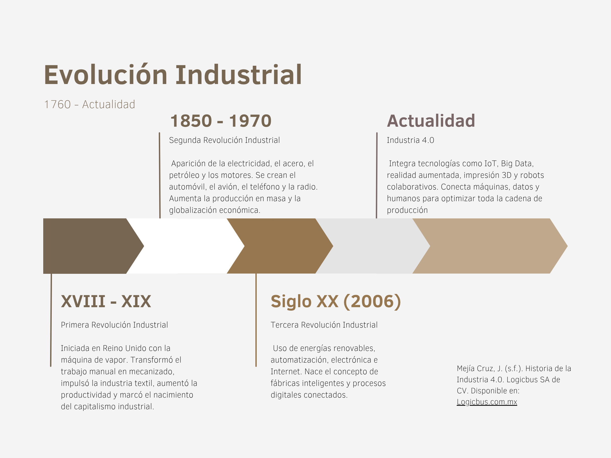

Evolución de la Industrialización
Primera Revolucion Industrial.comienza con la introducción de equipos mecánicos en la
manufactura al final del siglo XVIII. Las máquinas y los motores revolucionaron la forma en que
los bienes eran producidos. La sociedad pasó de ser una sociedad agrícola a ser una sociedad
industrial.
Segunda Revolucion Industrial.
Comenzó a principios del siglo XX e involucró la producción en masa de bienes usando electricidad y
basada en la división del trabajo. Esta revolución se caracterizó por cambios organizacionales
como la implementación de la producción en línea (fordismo) y la administración científica de
procedimientos (taylorismo). La producción en masa aumentó y procedió en las industrias
química, electrónica y automotriz.
Tercera Revolucion Industrial.
- Comenzó en los años 70 y continúa hasta hoy. La tercera revolución se
caracteriza por la implementación de la electrónica y de las tecnologías de la información para
la automatización de los procesos de manufactura, lo que permite el gradual remplazo del
trabajo humano.
- Se caracteriza por la implementacion de la electronica y de las tecnologias de la informacion para la automatizacion de los procesos de manufactura
- Permite el gradual reemplazodel trabajo humano
Cuarta Revolucion Industrial.
- Industria 4.0, el "4.0" se refiere a una cuarta revolución industrial que se espera sea
realizada por los sistemas de producción ciber-físicos que fusionan los mundos real y virtual.
- Igual que las tres previas revoluciones, dominada por las innovaciones
técnicas.
- Está marcada por una integración técnica de sistemas ciber físicos
en los procesos de logística y manufactura, así como también por el uso del internet de las
cosas y de los servicios en los procesos industriales. Las nuevas tecnologías tienen impacto
sobre la creación de valor, la organización 2el trabajo, el flujo de servicios y los modelos de
negocios de las compañías.
